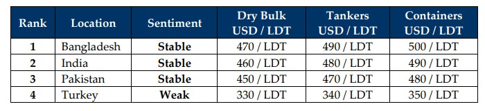

inWeekly Demolition Reports02/12/2024

As the recently sensitive ceasefire between Israel & Hezbollah gradually takes hold and the Russia-Ukraine fighting sees the use of increasingly deadlierweapons, this week, likely emboldened by the Gaza conflict, the world saw Syrian rebels recapture Aleppo from government forces, and they are reportedly enroute to engage the capital city of Damascus. This saw WTI crude futures drop early in the week and steady around USD 69 / barrel as the week ended. The news of the ceasefire also saw the already declining Baltic Exchange Dry Index fall over 4.5% this week, and to its lowest level since January ‘24. Meanwhile, despite incoming president Trump’s announcement of applying sweeping tariffs to the tune of 25% on China, Mexico, and even Canada, the U.S. economy continues to firm as U.S. inflation drops to (globally) fantastic levels and the U.S. Dollar strengthens against nearly all ship recycling nation currencies this week. The news of the ceasefire also continued to see tensions around trade routes ease and a healthy number of already beach-worthy yet still employed ladies finally make their appearances at the various ship recycling waterfronts, especially Alang. With sub-continent markets gradually settling into a familiar routine of introductions & acceptances at the bidding tables at prevailing levels, a fragile sense of stability in a market that has otherwise seen the worse an industry could offer, is gradually starting to come through. As recycling nation currencies weaken and steel prices remain shaky, plate levels plummeted in Pakistan (and even Turkey) this week, sending Gadani sentiments further South for the upcoming Winter and all but wiping out sensible exchanges with Gadani buyers. Bangladesh, on the other hand, descended into a week of virtually no activity at the bidding tables other than local deliveries, as this market looks ripe for possibly no fresh arrivals next week. In the middle of it all lies India, with an INR that continues to strike at the economic heart of domestic ship recyclers, despite this market performing the best in the industry at present. Finally, Turkey on the West end had an INR-mirroring Lira performance that is well on its way to breach TRY 34 against the U.S. Dollar.
Overall, as both India and Bangladesh will likely have concluded key elections within Q1 2025, ship recyclers in these markets can hopefully move forward on the back of some sensible modifications to upcoming domestic / infrastructure projects and steel from local yards should start to shift at pace once again. Mercifully, the lack of domestic demand for recycled steel within ship recycling nations has been met with a supply of tonnage that has been equally pitiful over the course of the entire year, and perhaps the lowest in over a decade as trading markets have performed above expectation, in turn, keeping shipping lanes the busiest we have seen over the recent years (and across all sectors of vessels), further delaying the scrapping of vintage assets across the board. As Chinese businesses gear up for their stimulus package, which offers hope not only for their beleaguered economy (over the next year), but also for steel plate price patterns at competing nations, which remain volatile due to consistently cheaper Chinese steel imports. The stimulus package is further expected to impact shipping markets & global trade patterns at large, especially as President Trump’s announcement of punitive tariffs has already seen economic forces reacting to his intent. While we hope that things will be under control, or at least allayed to ease already sensitive global sentiments; supply, demand, and vessel pricing should be able to pick up soon after i.e. well into Q1 2025.
For Week 48 of 2024, GMS Market Rankings / vessel indications are as below.

📄 Download PDF: Ship-recycling-market-insight-Week-48-11-29-2024-Unfamiliarly_Familiar.pdf
Source: GMS,Inc.https://www.gmsinc.net/gms_new/index.php/web